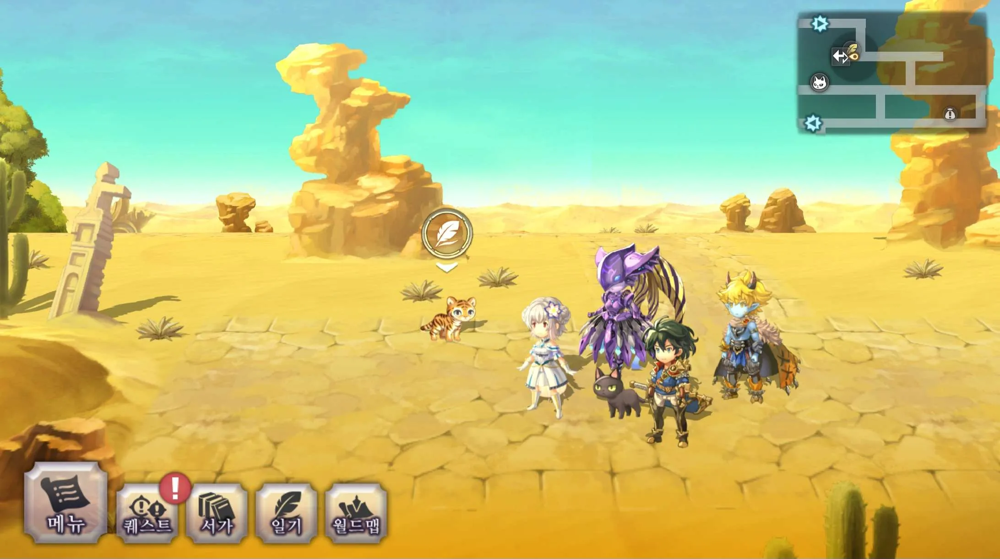
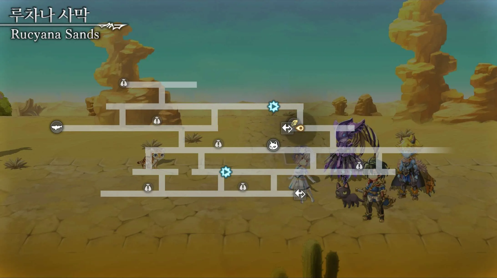

🐱 고양이 일기 · 냥도장 가이드
› 현대 › 미그레이나
루차나 사막
어나더에덴 고양이 일기(냥도장) 위치
현대
미그레이나
냥도장 대사
끝없이 펼쳐진 모래...... 흐르는 모래에 빠지지 않도록 조심해야겠다냥!


제보: 우어엌
전체 74곳 가이드에서 보기 →
← 자르보
고대 전쟁 유적 →
현대 · 미그레이나의 다른 냥도장
바르오키
누아르 평원
달그림자 숲 (안쪽 쉼터)
카레크 습지
왕도 유니건
미글랜스 성 2층
마수성 (옥좌)
자르보
루차나 사막
고대 전쟁 유적
뱀뼈섬 - 코니움
뱀뼈섬 - 뱀의 목 이고마
뱀뼈섬 - 뱀의 등 가바라기
뱀뼈섬 - 뱀의 머리 메즈키터
뱀뼈섬 - 뱀의 간 다마크